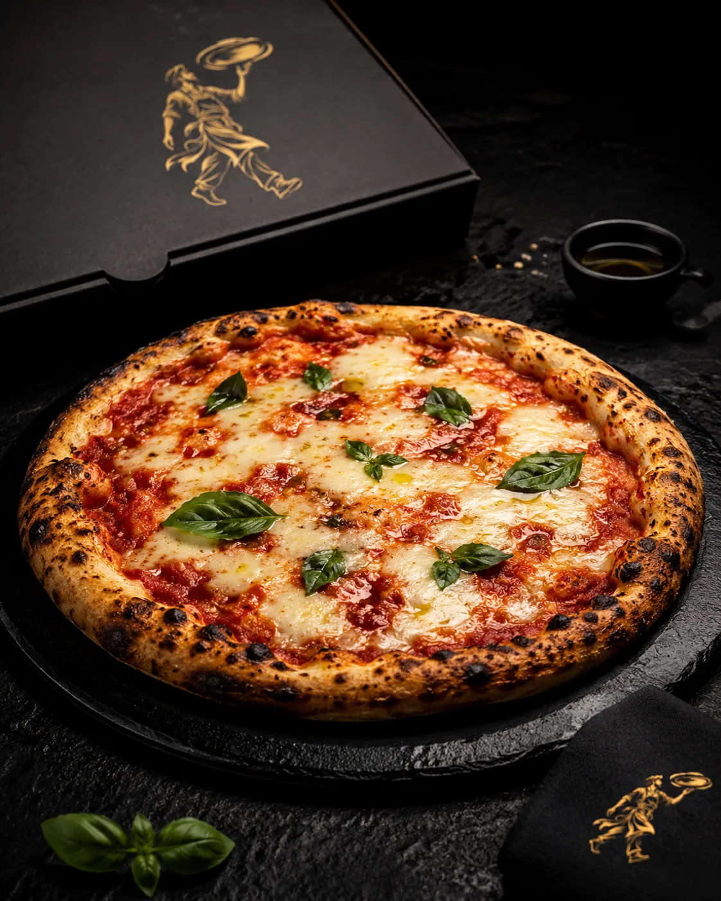

El Errante en Movimiento
No llevamos una caja de pizzas.
Llevamos la cocina.
Masa, ingredientes, hornos y servicio se mueven para abrir, montar, cocinar y terminar cada pizza frente a los invitados.
El fuego forma parte del encuentro.
La misma búsqueda, fuera del taller
Un evento pone a prueba todo lo que decimos sobre la pizza.
Masa madura, ingredientes bien conservados, horno estable y un servicio capaz de sostener ritmo mientras alrededor todo se mueve.
En Movimiento es donde harina, fermentación, fuego, operación y hospitalidad ocurren al mismo tiempo y frente a quien va a comer.

Tipos de encuentro
El formato cambia.
La cocina no se vuelve genérica.
Diseñamos la operación según el papel de la pizza, el número de personas, el lugar y el ritmo esperado.
Bodas
Comida principal, estación gastronómica o servicio nocturno dentro de una celebración más amplia.
Preparar datosEmpresas
Integraciones, clientes, lanzamientos y encuentros donde la preparación puede ser parte de la experiencia.
Preparar datosCelebraciones
Tú reúnes. Nosotros montamos una cocina abierta y una carta diseñada para compartir.
Preparar datosTalleres
Masa, apertura, ingredientes y fuego como experiencia de aprendizaje o integración.
Preparar datosLlegar · cocinar · servir
El lugar cambia.
La cocina no.
La experiencia debe sentirse como El Errante desde el montaje hasta el último servicio, no como una operación genérica vestida con un logo.
Fuego, masa y hospitalidad donde ocurre el encuentro.
Cocinar a la vista convierte apertura, montaje, horno y acabado en parte natural del evento.
Preparar la próxima rutaAntes de servir
Seis decisiones protegen la experiencia.
No improvisamos lo que puede prepararse con anticipación.
Acceso, superficie, circulación, energía, fuego, clima, montaje y relación con otros proveedores.
Pocos perfiles bien diferenciados permiten variedad sin detener el horno.
La masa se programa alrededor de temperatura, traslado, hora de servicio y volumen real.
Ingredientes porcionados, cadena de frío, utensilios y recorridos claros reducen movimientos innecesarios.
Apertura, montaje, horno y acabado permanecen visibles sin sacrificar control.
Inventario, desmontaje, residuos y estado del espacio también son parte de la operación.

La carta en movimiento
Un evento no necesita veinte pizzas distintas.
Necesita suficientes perfiles para que cada persona encuentre algo y una selección suficientemente corta para cuidar cada salida.
Margherita, Diavola y Bosque cubren claridad, intensidad y profundidad vegetal.
La Errante funciona como punto de identidad dentro de la selección.
Cuando tiene sentido, podemos estudiar una referencia temporal vinculada con temporada, lugar o colaboración.
Alergias y restricciones deben informarse antes. Sólo ofrecemos una preparación diferenciada cuando la operación puede garantizar la separación necesaria.
Formatos de servicio
El nombre orienta la escala.
La cotización define la realidad.
Asistentes, ubicación, duración, menú, personal y condiciones del lugar cambian cada propuesta.
Ruta Íntima
Montaje compacto para grupos pequeños, carta corta y producción continua alrededor del horno.
CotizarEl Encuentro
Mayor despliegue para celebraciones y equipos que quieren hacer visible la cocina.
CotizarLa Gran Ruta
Experiencia diseñada para el evento, con carta específica, colaboración o taller cuando aplica.
CotizarPreparar una cotización
Ordena los datos de la próxima ruta.
El canal comercial central todavía no está configurado en esta publicación. Este formulario guarda un borrador únicamente en tu navegador y prepara un resumen para copiar; no envía ni reserva el evento.